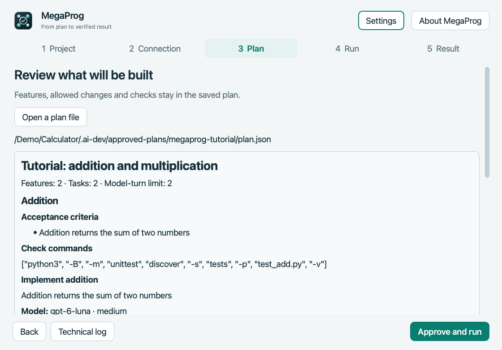

macOS · Apple Silicon
MegaProg
Run approved development tasks through Codex and preserve requirements, checks and project progress.
Preview · 4.5.1Before you startInstall Codex CLI separately and sign in with a ChatGPT account with Codex access; requires a Git project. Not notarized by Apple.


How it works
- Prepare a plan
- Pass the task to Codex CLI
- Review the result
First steps
Extract MegaProg.app, check the connection and open the tutorial. Review the plan and commands before approving execution.